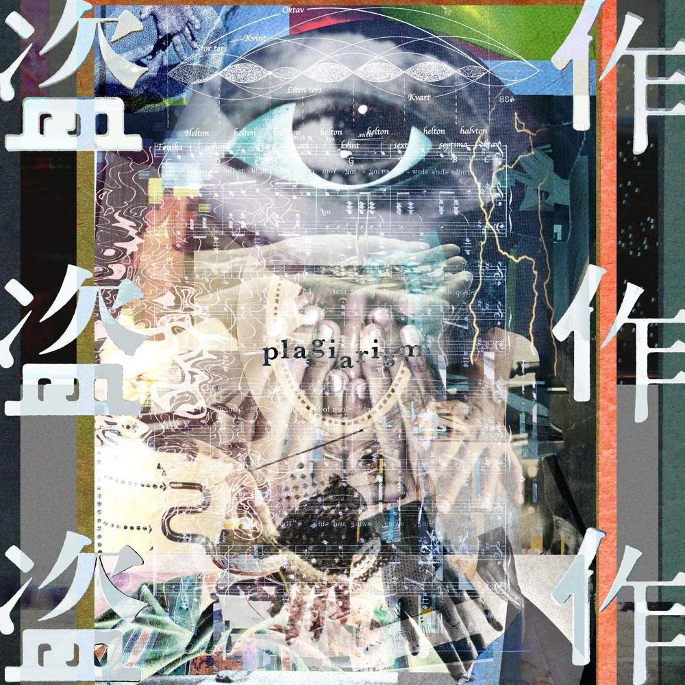
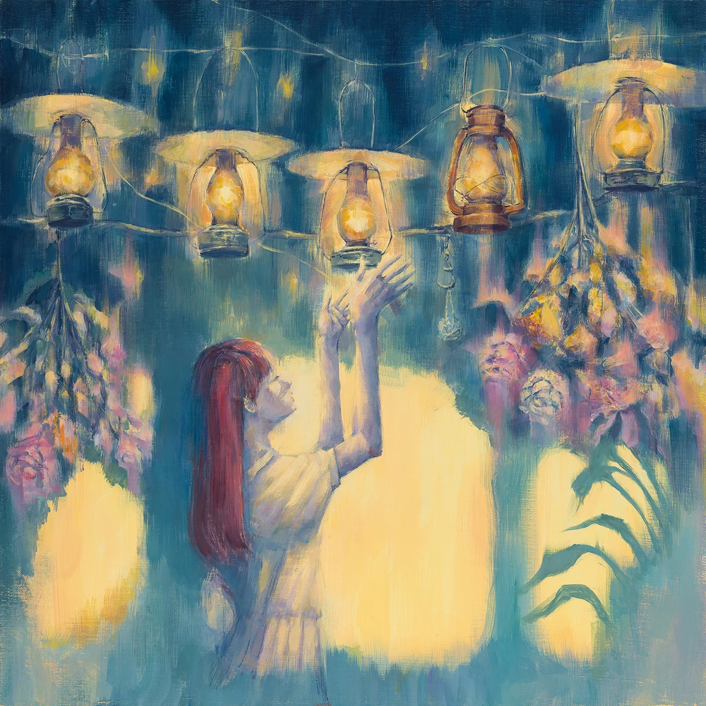

Albums
Moonlight (2019)
| General Information | |
|---|---|
| Native Title: | だから僕は音楽を辞めた |
| Romaji: | Dakara Boku wa Ongaku o Yameta |
| English Translation: | That's Why I Gave Up On Music |
| Release Date: | 2019 April 10 |
| Duration: | 49:24 |
- 8/31
- Blur (藍二乗)
- August, A Certain Place, Moonlight (八月、某、月明かり)
- Songwriting and Coffee (詩書きとコーヒー)
- 7/13
- Let's Dance (踊ろうぜ)
- In June, I'll Write About the Town After the Rain (六月は雨上がりの街を書く)
- In May, From the Emerald-Green by the Window (五月は花緑青の窓辺から)
- False Night (夜紛い)
- 5/6
- Parade (パレード)
- Elma (エルマ)
- 4/10
- Moonlight (だから僕は音楽を辞めた)
Elma (2019)
| General Information | |
|---|---|
| Native Title: | エルマ |
| Romaji: | Eruma |
| English Translation: | Elma |
| Release Date: | 2019 August 28 |
| Duration: | 48:20 |
- Train Window (車窓)
- Only Sorrow (憂一乗)
- Evening Calm, Somewhere, Fireworks (夕凪、某、花惑い)
- Rain with Cappuccino (雨とカプチーノ)
- Lakeside Town (湖の街)
- Dance of You (神様のダンス)
- After the Rain (雨晴るる)
- Walk (歩く)
- Hole In The Heart (心に穴が空いた)
- Church in the Forest (森の教会)
- Voice (声)
- Amy (エイミー)
- Seabed, Moonlight (海底、月明かり)
- Nautilus (ノーチラス)
Plagiarism (2020)
| General Information | |
|---|---|
| Native Title: | 盗作 |
| Romaji: | Tousaku |
| English Translation: | Plagiarism |
| Release Date: | 2020 July 29 |
| Duration: | 46:05 |
- Confession Of Plagiarist (音楽泥棒の自白)
- Burglar (昼鳶)
- Bomber (Re-Recording) (爆弾魔 Re-Recording)
- Adolescent, Burglar (青年期, 空き巣)
- Replicant (レプリカント)
- Flower And Badger Game (花人局)
- Middle Age, Plagiarist (朱夏期, 音楽泥棒)
- Plagiarism (盗作)
- Thoughtcrime (思想犯)
- Escape (逃亡)
- Childhood, In Memories (幼年期, 思い出の中)
- Night Journey (夜行)
- Ghost In A Flower (花に亡霊)
Magic Lantern (2023)
| General Information | |
|---|---|
| Native Title: | 幻燈 |
| Romaji: | Gentou |
| English Translation: | Magic Lantern |
| Release Date: | 2023 April 5 |
| Duration: | 96:43 |
Chapter 1: Portrait of Summer
- Portrait of Summer (夏の肖像)
- Miyakochi (都落ち)
- Bremen (ブレーメン)
- Chinokate (チノカテ)
- Snow Country (雪国)
- Howl at the Moon (月に吠える)
- 451
- Pas de deux (パドドゥ)
- Matasaburo (又三郎)
- Fireworks of Shoes (靴の花火)
- The Old Man and the Sea (老人と海)
- Goodbye Morten (さよならモルテン)
- Whale (いさな)
- Left-Right Confusion (左右盲)
- Algernon (アルジャーノン)
Chapter 2: Dancing Animals
- First Night (第一夜)
- Second Night (第二夜)
- Third Night (第三夜)
- Fourth Night (第四夜)
- Fifth Night (第五夜)
- Sixth Night (第六夜)
- Seventh Night (第七夜)
- Eight Night (第八夜)
- Ninth Night (第九夜)
- Tenth Night (第十夜)